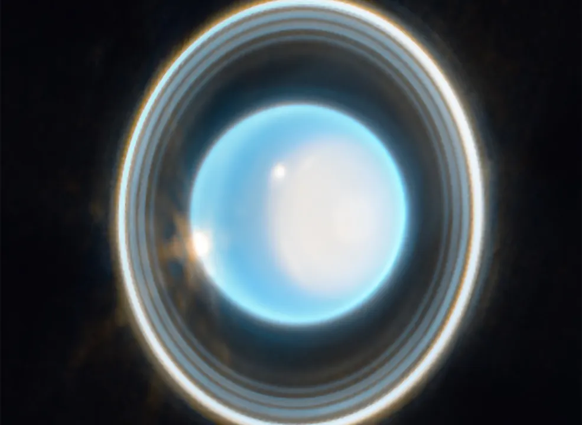
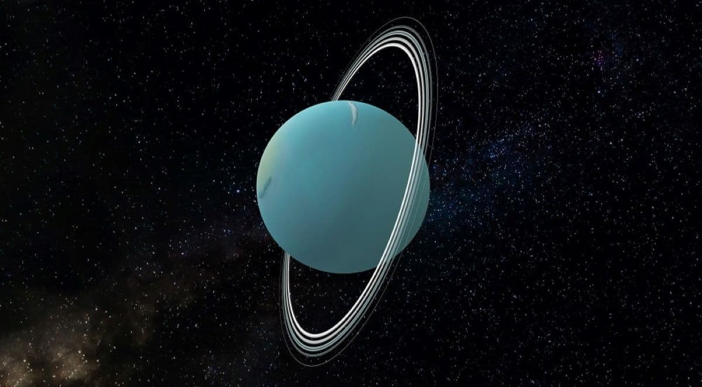
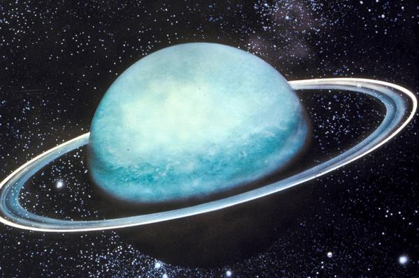

Urano
O Gigante Gélido e Planeta Inclinado
Urano, um dos gigantes do nosso sistema solar, guarda segredos intrigantes. O que o torna verdadeiramente único é sua inclinação extrema. Enquanto a maioria dos planetas tem uma inclinação axial modesta, Urano gira de lado, com um ângulo de quase 98 graus em relação ao plano de sua órbita. Isso faz com que seus pólos apontem quase diretamente para o Sol em partes de sua órbita.
História e Observação
A história de Urano na astronomia começa com sua descoberta notável em 1781 pelo astrônomo britânico William Herschel. Até aquele momento, Urano era desconhecido para a humanidade, pois não era visível a olho nu.
Herschel, munido de seu telescópio, avistou pela primeira vez um objeto celestial que não se parecia com uma estrela ou planeta conhecido. Essa descoberta marcante expandiu nosso conhecimento sobre o sistema solar e demonstrou o poder da observação telescópica.
Anéis e Luas
Urano também possui anéis e luas fascinantes. Seus anéis são muito mais finos e menos brilhantes em comparação com os de Saturno. Urano continua a ser um dos planetas mais misteriosos e menos explorados do nosso sistema solar.
O planeta tem pelo menos 27 luas conhecidas, cada uma com características únicas. Miranda, uma das luas de Urano, possui falésias e formações geológicas impressionantes que indicam uma história tumultuada.
Luas: Miranda, Ariel, Umbriel, Titânia, Oberon, Caliban, Sycorax, Margaret, Prospero, Setebos, Stephano, Trinculo, Francisco, Margaret, Perdita, Mab, Cupid, Portia, Rosalind, Belinda, Cressida, Desdemona, Ophelia, Bianca, Cordelia, Clio.
Composição Química
Quanto à composição química de Urano, ele compartilha muitas semelhanças com seus vizinhos gigantes gasosos, Júpiter e Saturno. Sua atmosfera é composta principalmente por hidrogênio e hélio, os gases predominantes no sistema solar.
No entanto, o que torna Urano distinto é a presença significativa de metano em sua atmosfera. O metano é responsável pela coloração azul-esverdeada de Urano quando observado do espaço. Sua inclinação única e sua composição química intrigante o tornam um objeto de estudo empolgante para os cientistas, enquanto sua descoberta histórica é um marco na história da astronomia.
Curiosidades
Baixa Luminosidade: Devido à sua grande distância do Sol, Urano é um dos planetas mais fracos em termos de brilho quando observado da Terra. Isso o torna difícil de detectar a olho nu e muitas vezes requer o uso de telescópios para ser observado.
Tempestades e Clima: assim como outros planetas gasosos, Urano também experimenta tempestades em sua atmosfera. No entanto, devido à sua distância do Sol, o clima em Urano é extremamente frio, com temperaturas que podem chegar a -224°C.
Descoberta Tardia: Urano foi o último planeta a ser descoberto com um telescópio. Foi observado pela primeira vez por William Herschel em 1781. Antes disso, Urano era conhecido apenas como uma estrela, devido ao seu brilho fraco.
